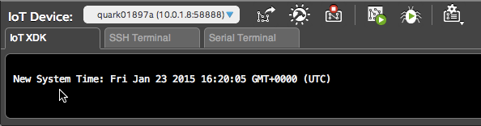

Step 4: Deploy a sample application with the Intel® XDK IoT Edition
Instructions for the Intel® Galileo or Intel® Edison using any computer OS platform
The Intel® XDK IoT Edition lets you create and test applications on Intel® IoT platforms. It uses NodeJS to communicate with all the GPIOs, libraries, and packages. The IoT edition also provides NodeJS templates for creating new applications that interact with sensors and actuators, enabling you to get a quick start on developing for the Internet of Things.
Launch and sign into the Intel XDK
-
Launch Intel® XDK IoT Edition.
-
Follow the on-screen instructions to sign up for an Intel® XDK account, or log in to a pre-exis ting account.

Create a project
-
Under the "Internet of Things Embedded Application" option in the lefthand menu, select "Templates".
-
A list of templates for developing Node.js applications will be shown. Select "Onboard LED Blink" template, then click "Continue".
-
Choose a directory for your project files, and enter a name for your project.

-
Click "Create" in the bottom right corner.

Select a target IoT device
The Intel® XDK IoT Edition will automatically detect Intel® IoT devices on your network and display them in the "IoT Device" drop down list.
Problems with Wi-Fi? Need to program while offline?
The Intel® XDK requires the IP address of your IoT board in order to program it. If your IoT board is online, the IP address is automatically detected in most cases.
However, if you are unable to get your IoT board online to the same network as your computer due to restricted or busy Wi-Fi networks, try a direct cable-based method and Add a device manually to the drop down list.
Intel® Galileo users:
Connect an ethernet cable directly from your computer to the Intel® Galileo.
Intel® Edison users:
Use the device mode micro-USB cable to establish an "Ethernet over USB" connection.
-
In the bottom left corner of the Intel® XDK, click the "IoT Device" drop down list which currently indicates "- Select a Device -".
-
Select your target Intel® Galileo or Intel® Edison from the list. If there are multiple devices, choose based on the device name and IP address.

Do not see your device in the "IoT Device" drop down list?
From the "IoT Device" menu, instead choose "Add Manual Connection".

- For Address, enter the IP address of your Intel Edison Board that you saw in Step 3: Login to your Intel Edison. e.g. 192.168.0.2
- For Port, keep at the default "58888".
- For User Name, use "root"
- For Password, use "intel123" or the password you set in Step 3: Login to your Intel Edison
Click "Connect".
-
Wait a moment for the connection to be established. Use the username "root" and password "intel123" if prompted. A popup window will appear to confirm the connection status.

Sync device clocks
-
In the bottom toolbar, click the "Manage your daemon/IoT device" icon.

-
Select "sync PC time w/ clock on target device".
-
A message in the console log will appear to confirm the update.

Build the application
-
In the bottom toolbar, click the "Install/Build" icon.

-
In the popup, click "Build".

-
Wait a moment for the packages to download and install. You will see a confirmation message in the console log.
Click the "Toggle console window" icon if you see any messages and the console is not already expanded.
Upload and run the application
-
In the bottom toolbar, click the "Upload" icon to upload the current project to the device.

-
Check the console log for a message confirming the upload.

-
In the bottom toolbar, click the "Run" icon to run the project that is currently installed on the device.

-
Keep an eye on the console log bar for any runtime errors.

Click the "Toggle console window" icon if you see any messages and the console is not already expanded.
Get a "cannot find module mraa" message?

If you see this error message, your board is missing libmraa, a library for GPIO communication on Linux platforms.
Connect to your IoT board via serial or SSH. Then run the following commands:
echo "src mraa-upm http://iotdk.intel.com/repos/1.1/intelgalactic" > /etc/opkg/mraa-upm.conf opkg update opkg install libmraa0The first command will edit the mraa-upm config file on the board. The last two commands use the board's built-in Opkg package manager to download and update the missing library
After updating the MRAA libraries, return to the Intel® XDK. Click the "Run" icon again to re-run the project on the device
-
Look at your Intel® IoT board for a blinking light.
Intel® Galileo Gen 2
A green LED is located near the USB port.Intel® Edison
The LED is located near the center of the board.
Congratulations, you just ran your first Intel® XDK application!
You should now be able to build and deploy projects using the Intel XDK. An LED should be blinking on your Intel® IoT board.